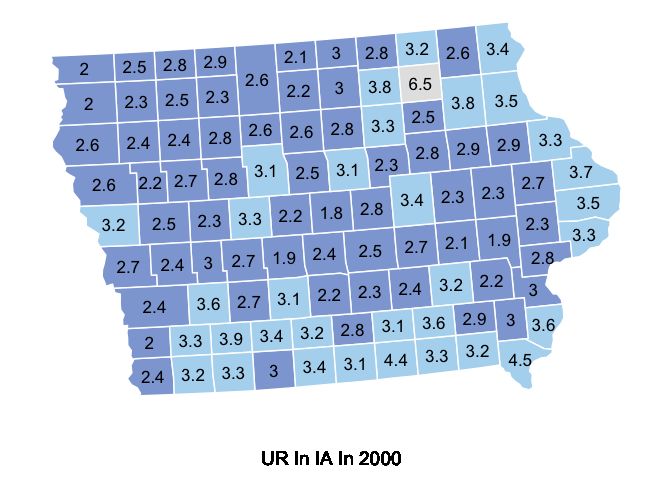

The goal of unemployedR is to visualize unemployed rate and household income compare with time across United States.
Here are links to our GitHub repository where the code for the package is stored and to the package website where more information about the package is well shown.
And the shiny app can be found under theinst/shiny-example folder or ran the unemployedR::runExample().
Installation
You can install the development version of unemployedR like so:
# install.packages("unemployedR")Example
This is a basic example which shows you how to solve a common problem:
dataclean(url)
This function is used to clean the data for the future plots.
The example shows the structure of the data file after cleaning.
library(unemployedR)
# data cleaning
file=dataclean("https://www.ers.usda.gov/webdocs/DataFiles/48747/Unemployment.csv")
str(file)
#> 'data.frame': 290441 obs. of 7 variables:
#> $ FIPS_Code: int 0 0 0 0 0 0 0 0 0 0 ...
#> $ State : chr "US" "US" "US" "US" ...
#> $ Area_name: chr "United States" "United States" "United States" "United States" ...
#> $ state : chr NA NA NA NA ...
#> $ Attribute: chr "Civilian_labor_force_" "Employed_" "Unemployed_" "Unemployment_rate_" ...
#> $ year : num 2000 2000 2000 2000 2001 ...
#> $ Value : num 1.43e+08 1.37e+08 5.70e+06 3.99 1.44e+08 ...plotunemployed(file, yr, State.name)
This function is used to plot the unemployment rate in county level for a specific state and a year.
The example shows the unemployment rate in county level for NJ in 2018.
plotunemployed(file, 2018, "NJ")plotmedianhouseholdincome(file, State.name)
This function is used to plot the 2019 median household income in county level for a specific state.
The example shows 2019 median household income in county level for MS
plotmedianhouseholdincome(file,"MS")
plotunemployed_animation(file, State.name)
This function is used to provide animation plot of the unemployment rate in county level for a specific state.
The example shows unemployment rate in IA from 2000 to 2020.
plotunemployed_animation(file, "IA")
plotunemployed_time(file, local.name)
This function is used to plot the unemployment rate along with years.
The example shows unemployment rate in IA along with years.
plotunemployed_time(file, "IA")
stateunemployed(file, yr, State.name
This function is used to plot top 10 unemployed county histogram in selected state and a year.
The example shows top 10 unemployed counties in IA in 2011 histogram.
stateunemployed(file, 2011,"IA")You’ll still need to render README.Rmd regularly, to keep README.md up-to-date. devtools::build_readme() is handy for this. You could also use GitHub Actions to re-render README.Rmd every time you push. An example workflow can be found here: https://github.com/r-lib/actions/tree/v1/examples.
In that case, don’t forget to commit and push the resulting figure files, so they display on GitHub and CRAN.